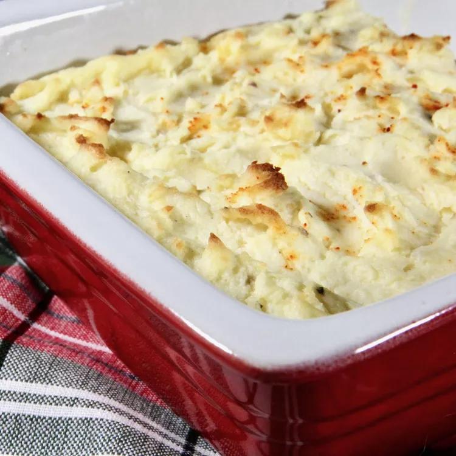

Mascarpone Mashed Potatoes

Description
Here's a make-ahead mashed potato recipe featuring
creamy mascarpone cheese. Make them in advance, then
simply bake until the tops are a beautiful golden brown.
"Not only is this a delicious alternative to regular mashed
potato recipes, but it's a very user-friendly way to serve
your potato side dish," says Chef John.
"They're really decadent: not too rich, but just rich enough,
and perfect for any special occasion."
Ingredients
- 4 ½ pounds russet potatoes, peeled and halved lengthwise
- ½ cup mascarpone cheese at room temperature
- 1 egg yolk
- ¾ cup milk
- salt and freshly ground black pepper to taste
- 1 pinch cayenne pepper, or to taste
- 1 cup butter, cut into chunks
Steps
-
Place potato halves into a large pot of salted water,
bring to a boil, and reduce heat to medium-low.
Cook until very tender, about 15 minutes.
A knife should pierce the middle of a potato half easily.
Transfer potatoes to a colander and drain thoroughly, about 5 minutes.
- Preheat oven to 425 degrees F (220 degrees C).
-
Whisk mascarpone cheese in a mixing bowl until smooth.
Stir egg yolk and milk into mascarpone cheese,
until smooth; season with salt, black pepper, and cayenne pepper.
- Transfer potatoes to a separate large mixing bowl,
add butter chunks to potatoes, and season with salt
and black pepper. Mash butter into potatoes with a
potato masher until fluffy; a few lumps are okay.
Whisk mascarpone mixture into mashed potatoes.
- Spread mashed potatoes into a 9x13-inch baking dish.
Smooth the top and use the tip of a spatula to lightly
press the potatoes and lift up to create little peaks
and valleys in the top.
-
Bake in the preheated oven until potatoes are heated through and
top is golden brown, about 20 minutes.